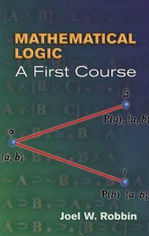

Robbin: Mathematical Logic

Joel W. Robbin’s Mathematical Logic: A First Course (W. A Benjamin, 1969, Dover reprint 2006: pp. 212) is just 170 pages long. But it does range over both formal logic (first-order and second-order), and formal arithmetic, primitive recursive functions, and Gödelian incompleteness. Robbin therefore has to be pretty brisk (in part he achieves brevity by leaving a lot of significant results to be proved as more or less challenging exercises). However, the book remains approachable and has some very nice and rather unusual features for which it can be recommended.
Some details Ch. 1 is on the propositional calculus. Robbin presents an axiomatic system whose primitives are → and ⊥ – or rather, in his notation, ⊃ and f. The system, including a syntax using periods for brackets, is a version of Alzono Church’s system in his Introduction to Mathmatical Logic, Vol. 1 (1944/1956), except that where Church lays down three specific wffs as axioms and has a substitution rule for deriving variant wffs, Robbin lays down three axiom schemas. As in later chapters, Robbin buries some interesting results in the extensive exercises. Here’s one, pointed out to me by David Auerbach. Robbin defines negation in the obvious way from his two logical primitives, so that ∼ φ = def(φ → f). And then his three axiom schemas can all be stated in terms of ⊃ and ∼ , and his one rule is modus ponens. This system is complete. However, if we take the alternative language with ⊃ and ∼ primitive, then the same deductive system (with the same axioms and rules) is not complete. That’s a nice little surprise, and it is worth trying to work out just why it is true.
Ch. 2 briefly covers first-order logic, including the completeness theorem. Then Ch. 3 introduces what Robbin calls ‘First-order (Primitive) Recursive Arithmetic’ (RA). Robbin defines the primitive recursive functions, and then defines a language which has a function expression for each p.r. function f (the idea is to have a complex function expression built up to reflect a full definition of f by primitive recursion and/or composition ultimately in terms of the initial functions). RA has axioms for the logic plus axioms governing the expressions for the initial functions, and then there are axioms for dealing with complex functional expressions in terms of their constituents. RA also has all instances of the induction schema for open wffs of the language (so – for cognoscenti – this is a stronger theory than what is usually called Primitive Recursive Arithmetic these days, which normally has induction only for quantifier-free wffs).
Ch. 4 explores the arithmetization of syntax of RA. Since RA has every p.r. function built in, we don’t then have to go through the palaver of showing that we are dealing with a theory which can represent all p.r. functions (in the way we have to if we take standard PA as our base theory of interest). So in Ch. 5 Robbin can prove Gödel’s incompleteness theorem for RA in a more pain-free way. Ch. 6 then turns to second-order logic, introduces a version of second-order PA2 with just the successor relation as primitive non-logical vocabulary. Robbin shows that all the p.r. functions can be explicitly defined in PA2, so the incompleteness theorem carries over.
Summary verdict Robbin’s book offers a different route through a rather different selection of material than is usual, accessibly written and still worth reading (you will be able to go though quite a bit of it pretty rapidly if you are up to speed with the relevant basics. Look especially at Robbin’s Ch. 3 for the unusually detailed story about how to build a language with a function expression for every p.r. function, and the last chapter for how in effect to do the same in PA2.